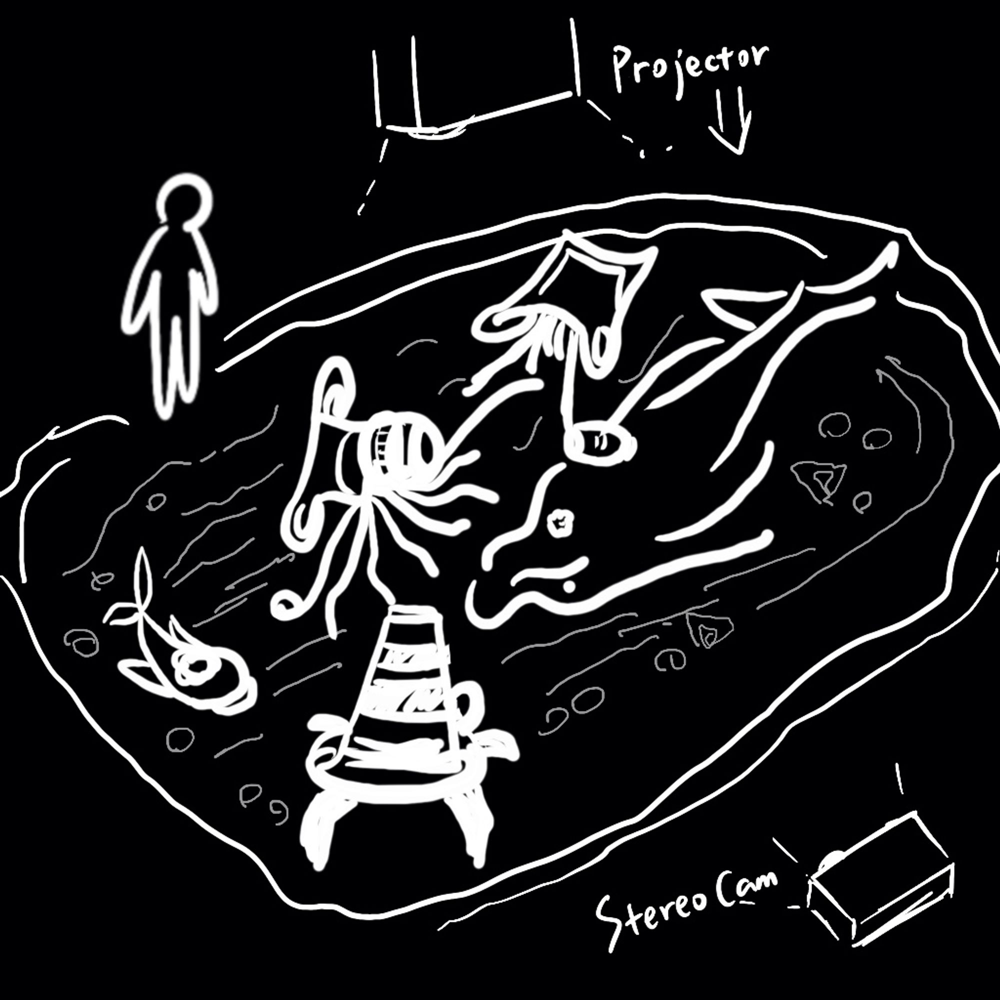
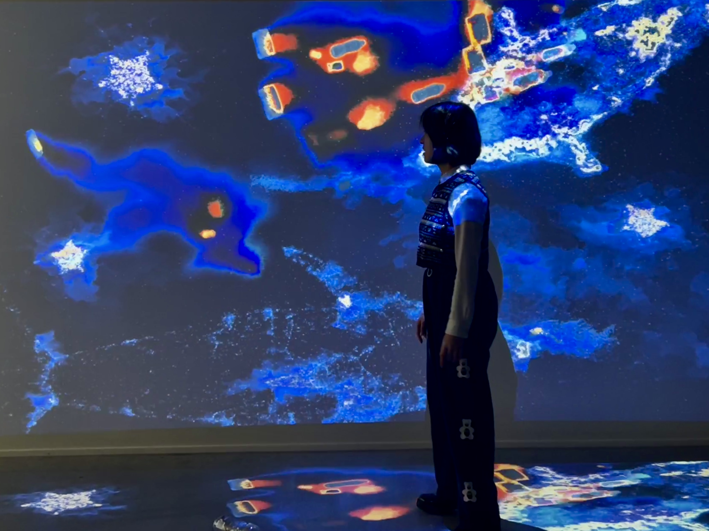
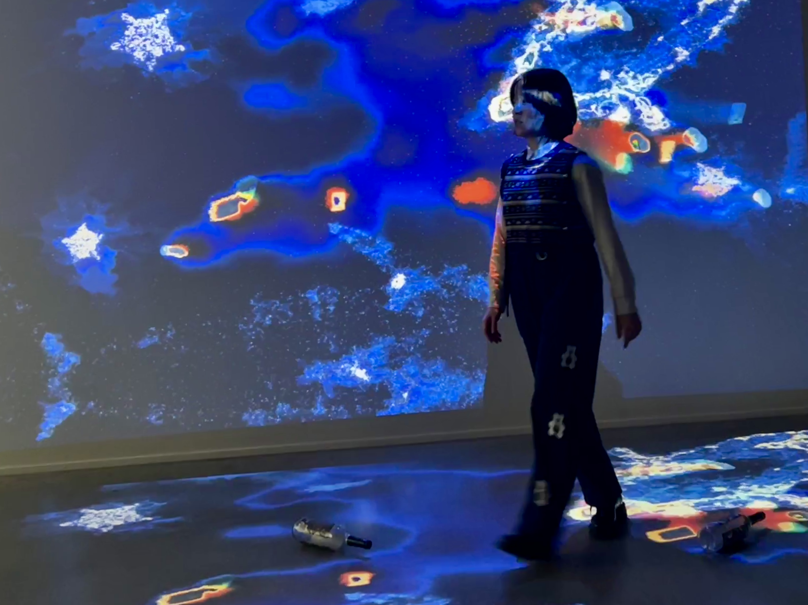

“Contamination to System”
– An Embodied interactive mapping with real-time generative visual.
[ ‘Contamination to System’ explores ocean contamination and the threats to sea creatures caused by humans. When people come, trash and pollution liquid leak from their hands and bodies. I do that by using the real-time generated visual to create an embodied interactive mapping.
The project gets inspiration from the phenomenon that some sea creatures consume man-made contamination which then combines in their body and finally flows into the sea ecosystem. ]
– Video Presentation
Main software: Blender, TouchDesigner
Main hardware: Zed Camera
Audio composited using sound effects under CC0 license.

– Concept
My experience in underwater diving and sea fishing in shallow sea areas provided me a glimpse into how easily the human-made would become trash and then be ‘forgotten’ in the sea. They are only small parts of the contamination humans have been making to the ocean, not to mention the pollutants that are deliberately released. The project presents the phenomenon in an alerting way. How do simple contaminations become huge burdens? Where will they go? What will they become? Will they come back again to turn on us?
The artistic project presents the crisis that sea creatures dying from their original characteristics because of contamination. The conflict between humans and the sea environment is brought into a new perspective that sea creatures are forced to ‘gene variation’ caused by matters from contamination.
The work will come as a new theme along with my practice of interactive visuals with physical and embodied interfaces to discuss human and natural life. It aims to bring up fresh visualizations and narrative methods to communicate to the public. It allows people to witness and interact with the process in the exaggerated way. While providing these playful experiences, it offers an ironic and thought-provoking perspective on bio-contamination.



– Reflection
During the procession of this project, technically I explored more on creating 3D objects as the reactive parts when tracking people’s movements. In TouchDesigner, with the Blender-TD add-on by Factory Settings, I could more conveniently import the models and basic materials I made in Blender to TD. Then, I started by exploring points-cloud and different particle systems. Furthermore, I learned how to use the input data of ZED camera to convert the tracking data of multiple people’s body parts to be the controller of certain effects.